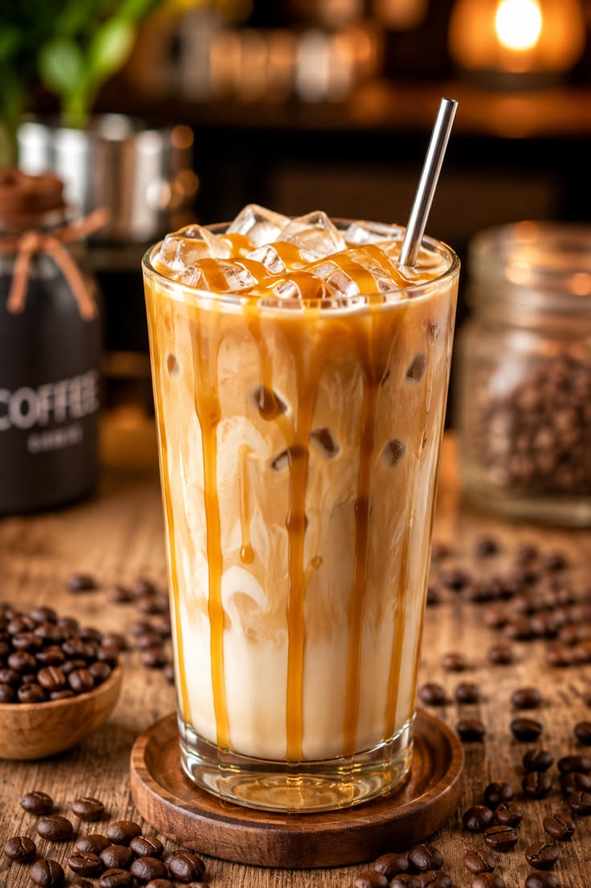
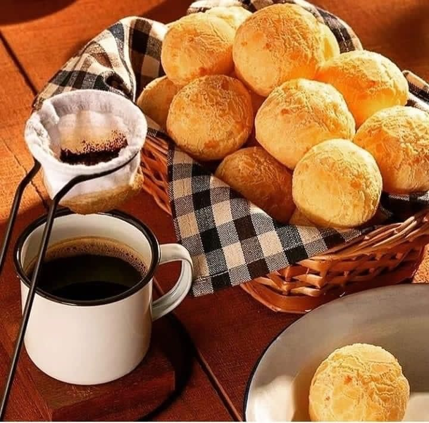

A descoberta lendária
Uma antiga lenda da Etiópia conta que o pastor Kaldi percebeu a energia de suas cabras ao comerem frutos vermelhos de um arbusto de café.
Bebidas artesanais preparadas com cuidado, padaria fresca, ambiente acolhedor e atendimento que encanta. A experiência Café Marangoni está aqui para suas pausas especiais.



Conheça a jornada que une história, qualidade e paixão pelo café
Uma antiga lenda da Etiópia conta que o pastor Kaldi percebeu a energia de suas cabras ao comerem frutos vermelhos de um arbusto de café.
O cultivo chegou ao norte do Brasil e, ao longo dos séculos, ganhou importância na cultura e economia do país.
Inspirado por essa tradição, o Café Marangoni transforma cada xícara em um momento de pausa, encontro e sabor.
Grãos premium escolhidos com cuidado para garantir qualidade em cada bebida.
Equipe dedicada a oferecer conforto, atenção pessoal e uma experiência memorável.
Espaço aconchegante com 15 mesas para pausas, conversas ou trabalho concentrado.
O Café Marangoni nasceu da vontade de transformar a pausa para o café em um momento especial de encontro e acolhimento. Cada receita é preparada com atenção aos detalhes e com ingredientes cuidadosamente selecionados.
Oferecemos atendimento flexível: aproveite um café no balcão, sente em uma de nossas 15 mesas aconchegantes, ou leve para casa. Porque acreditamos que toda pausa merece ser especial.
Grãos selecionados, preparo artesanal e atenção em cada detalhe para garantir excelência.
Equipe que conhece seus clientes e se dedica a criar experiências memoráveis.
Espaço cuidadosamente pensado para conversas, trabalho e momentos de pausa perfeitos.
Compromisso com escolhas conscientes, responsáveis com o meio ambiente e a comunidade.
R. Pedro Lara Pinto, 355
Nova Mairinque, Mairinque - SP
18120-000
Seg-Sex: 6h30 - 19h
Sáb-Dom: 8h - 18h